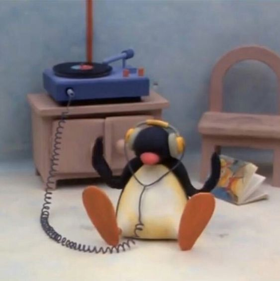
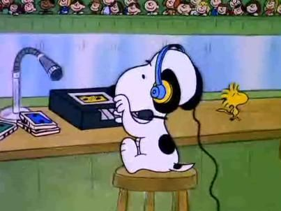
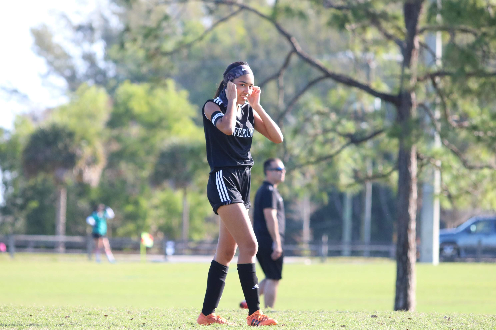
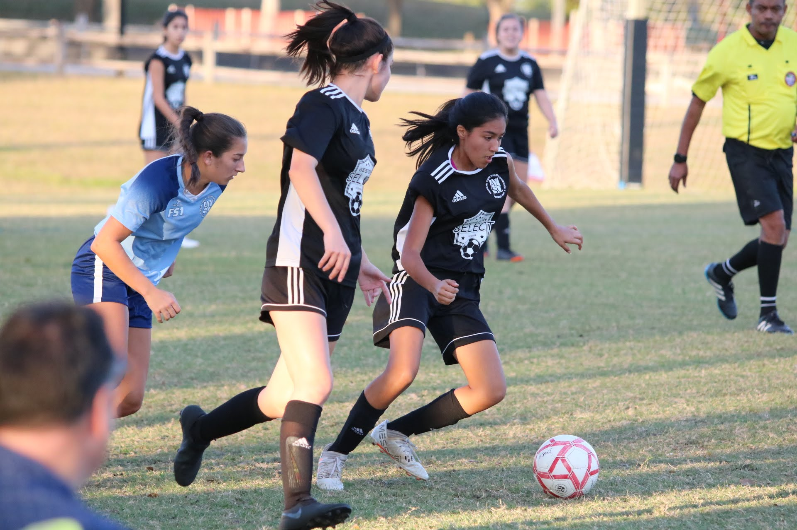

This is quite literally my favorite thing to do in the whole wide world. I use Spotify because I am a sucker for the Spotify wrapped statistics! I listen to a lot of different kinds of music from all different periods of time. Naturally, it means I love going to concerts. My first concert was R5 when I was around 10 years old. I have gone to Justin Bieber's, Selena Gomez's, Jonas Brothers', Conan Gray's, HAIM's, and Clairo's concert thus far.
 If you're curious about my tastes click here to visit my Spotify profile!
This is one of my favorite songs from one of my favorite band: Sonora by Spendtime Palace
I started playing soccer when I was around 4 years old. It has been a big part of my life until I got to college, it is difficult to continue to play due to a lot of outstanding factors. I play just for fun now, and I continue to follow the sport in my everyday life. I was really sad about Mexico not making it past the round of 16, but I blame the coach. I am very excited for the Women's World Cup this year, taking place in Australia. The USWNT is going to kill it.
 I love coloring when I get the chance. It is very relaxing for me and it helps me unwind. I recently got into it, and I started with markers from Five Below. I now have better markers and a couple different coloring books.
Reccommendations